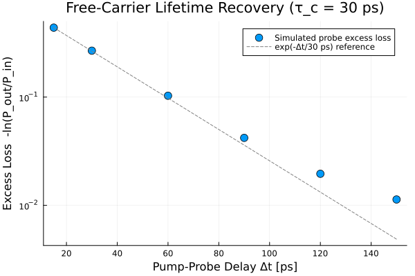

Example 12: Free-Carrier Lifetime — Pump-Probe Recovery
This example reconstructs a standard silicon-photonics laboratory measurement — pump-probe carrier lifetime extraction — entirely inside the simulation. A strong pump pulse generates free carriers via TPA; a weak, time-delayed probe pulse experiences extra Free-Carrier Absorption (FCA) from the carriers still present when it arrives. Sweeping the pump-probe delay and measuring the probe's peak-power loss traces out the carrier population's exponential decay, recovering the input recombination lifetime $\tau_c$ directly from solve.
🔬 Physics
Free carriers generated by TPA decay via a single recombination channel:
\[\frac{d N_c}{dt} = \frac{\alpha_2}{2\hbar\omega_0 A_{\text{eff}}^2}|A(t)|^4 - \frac{N_c(t)}{\tau_c}\]
A weak probe arriving at delay $\Delta t$ after the pump sees an FCA loss $\propto \sigma_{\text{FCA}} N_c(\Delta t)/2$, and since the pump has already passed, $N_c(\Delta t) \approx N_c^{\max} e^{-\Delta t/\tau_c}$. The probe's excess loss (beyond its own negligible self-TPA) should therefore decay exponentially with the same $\tau_c$ set on SemiconductorMedium — this is exactly the pump-probe technique used to measure carrier lifetimes in real SOI waveguides.
💻 Julia Code
using Soliton
using FFTW
grid = create_grid(2^13, 400e-12, 1550e-9)
soi = SemiconductorMedium(
length=0.003, gamma=100.0, alpha2=5.0e-12, Aeff=0.1e-12,
sigma_fca=1.45e-21, k_fcr=0.0, # k_fcr=0 isolates the FCA loss channel
tau_c=30.0e-12, # 30 ps carrier lifetime (fast-recovery SOI)
betas=[-1000e-27], lambda0=1550e-9,
)
# Shift a pulse envelope in time by an integer number of grid samples
function time_shift(At, grid, t0)
dt = grid.t[2] - grid.t[1]
return circshift(At, round(Int, t0 / dt))
end
pump_t0 = -150e-12
pump_At = time_shift(gaussian_pulse(grid, 40.0, 0.5e-12).At, grid, pump_t0) # strong 40 W pump
delays_ps = [15.0, 30.0, 60.0, 90.0, 120.0, 150.0]
probe_ratio = Float64[]
for dps in delays_ps
probe_t0 = pump_t0 + dps * 1e-12
probe_At = time_shift(gaussian_pulse(grid, 0.02, 0.3e-12).At, grid, probe_t0) # weak 20 mW probe
At_in = pump_At .+ probe_At
pulse_in = Pulse(At_in, ifft(At_in), grid)
sol = solve(pulse_in, SimParams(; medium=soi, raman_model=nothing, z_saves=2); progress=false)
win = abs.(grid.t .- probe_t0) .< 2e-12
Pin_probe = maximum(abs2.(probe_At[win]))
Pout_probe = maximum(abs2.(sol.At[win, end]))
push!(probe_ratio, Pout_probe / Pin_probe)
end
excess_loss = -log.(probe_ratio) # ∝ N_c(Δt) accumulated FCA loss
println("Excess probe loss vs delay: ", round.(excess_loss, sigdigits=3))
# Fit ln(excess_loss) vs delay -> slope = -1/tau_c
logloss = log.(excess_loss)
xbar, ybar = sum(delays_ps)/length(delays_ps), sum(logloss)/length(logloss)
slope = sum((delays_ps .- xbar) .* (logloss .- ybar)) / sum((delays_ps .- xbar).^2)
println("Fitted τ_c = ", round(-1/slope, digits=1), " ps (input τ_c = 30 ps)")Excess probe loss vs delay: [0.438, 0.268, 0.103, 0.042, 0.0196, 0.0113]
Fitted τ_c = 36.2 ps (input τ_c = 30 ps)
📊 Expected Results
| Δt [ps] | Excess probe loss |
|---|---|
| 15 | ~0.44 |
| 60 | ~0.10 |
| 150 | ~0.01 |
The fitted decay constant should land close to the input $\tau_c = 30\,\text{ps}$ (small residual bias comes from finite pump/probe overlap and the discrete delay sampling) — confirming the model's exponential free-carrier recombination is recoverable from a standalone solve call the same way it would be from an actual pump-probe experiment.
Setting k_fcr=0 disables Free-Carrier Refraction so the probe's peak-power drop is due to FCA loss alone, giving a clean single-mechanism decay curve. Re-enabling k_fcr would additionally chirp/blue-shift the probe — try sweeping it to see the carrier-induced index change show up as a spectral shift instead of (or alongside) amplitude loss.
References
Q. Lin, O. J. Painter, and G. P. Agrawal, "Nonlinear optical phenomena in silicon waveguides," Opt. Express 15, 16604–16644 (2007). DOI: 10.1364/OE.15.016604
A. C. Turner-Foster et al., "Ultrashort free-carrier lifetime in low-loss silicon nanowaveguides," Opt. Express 18, 3582 (2010). DOI: 10.1364/OE.18.003582